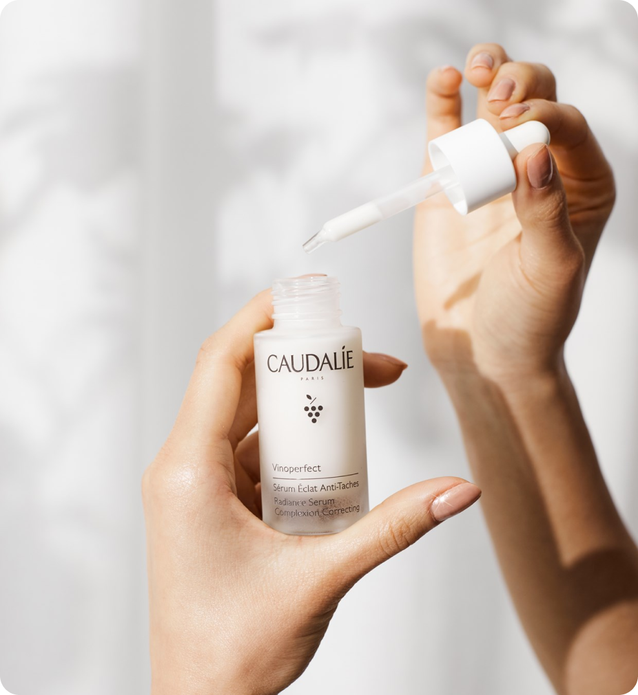

25 марта 2024
средства
Сыворотки для лица — это концентрированные средства, которые содержат высокую концентрацию активных ингредиентов, таких как витамины, антиоксиданты, пептиды и гиалуроновая кислота. Они предназначены для глубокого проникновения в кожу и обеспечивают интенсивный уход.
Описание
Сыворотки действуют на кожу более эффективно благодаря своей легкой текстуре, которая позволяет им быстро впитываться и проникать в глубокие слои кожи. Они способны улучшить текстуру кожи, уменьшить морщины, увлажнить и осветлить тон кожи, а также укрепить ее защитный барьер. Сыворотки для лица важны, потому что они могут решать конкретные проблемы кожи более эффективно, чем обычные увлажняющие средства. Они помогают ускорить процессы регенерации кожи, предотвращают появление признаков старения и защищают от негативного воздействия окружающей среды.

Применение
При использовании сывороток важно следовать инструкциям на упаковке и не перебарщивать с их количеством. Они обычно наносятся на очищенную кожу перед увлажняющим кремом или маслом 1-2 раза в день. Сыворотки могут использоваться как утром, так и вечером.
Сухой коже необходимо глубокое увлажнение. Для этого типа подойдут сыворотки с гиалуроновой кислотой, церамидами или натуральными маслами, которые увлажнят и питают кожу. Можно также обратить внимание на наличие в составе витаминов E, C и B3.
Для жирной кожи подойдут сыворотки с ингредиентами, такими как салициловая кислота, ниацинамид, гиалуроновая кислота или экстракты растений, которые могут помочь сократить поры и уменьшить воспаление.
Для чувствительной кожи лица рекомендуется выбирать сыворотки с мягкими и успокаивающими ингредиентами, такими как алоэ вера, экстракт огурца, пантенол или глицерин.